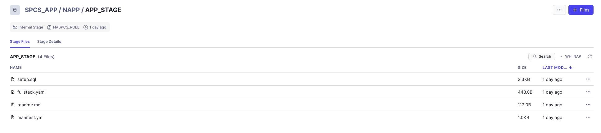

The Snowflake Native App Framework is a powerful way for application providers to build, deploy and market applications via the Snowflake Marketplace. In this example you will learn how to incorporate Snowpark Container Services into a Snowflake Native App allowing you to deploy a variety of new capabilities to a consumers Snowflake account.
Prerequisites
- A Snowflake account with ACCOUNTADMIN access
- Familiarity with Snowflake Snowsight Interface
- Basic Knowledge of Docker and Container Concepts
- Ability to install and run software on your computer
- Basic experience using git
What You'll Learn
- How to create an app using the Snowflake Native App framework
- How to build and push container images to a Snowflake account
- How to integrate those images into a Snowflake Native App and allow consumers to create Services
- How to test the Snowflake Native App Provider and Consumer experience within a single Snowflake account
What You'll Need
- A GitHub Account
- VSCode Installed
- Docker Desktop Installed
What You'll Build
In this quickstart we'll create a Snowflake Native App that uses Snowpark Container Services to deploy the following into a Snowflake account:
- Vue-based JavaScript frontend
- Flask-based Python middle tier
- nginx as a router
Once deployed, the application can be access via a Service Endpoint which then queries the TPC-H 100 data set and returns the top sales clerks. The frontend provides date pickers to restrict the range of the sales data and a slider to determine how many top clerks to display. The data is presented in a table sorted by highest seller to lowest.
Overview
In preparation for building our Snowflake Native App we need to download the code artifacts for the Native App along with the files to create our Container images from Github.
Step 2.1 - Clone or Download Github Repo
The code for the Native App and Container Images are on Github. Start by cloning or downloading the repository into a separate folder.
git clone https://github.com/Snowflake-Labs/sfguide-build-a-native-app-with-spcs
Overview
To simulate a Native App provider experience we will create a role called ‘naspcs_role' and grant it the necessary privileges required to create an Application Package as well as create a database that will store both our app code and Snowpark Container Service Images.
Step 3.1 - Create NASPCS role and Grant Privileges
use role accountadmin;
create role if not exists naspcs_role;
grant role naspcs_role to role accountadmin;
grant create integration on account to role naspcs_role;
grant create compute pool on account to role naspcs_role;
grant create warehouse on account to role naspcs_role;
grant create database on account to role naspcs_role;
grant create application package on account to role naspcs_role;
grant create application on account to role naspcs_role with grant option;
grant bind service endpoint on account to role naspcs_role;
Step 3.2 - Create SCPS_APP Database to Store Application Files and Container Images
use role naspcs_role;
create database if not exists spcs_app;
create schema if not exists spcs_app.napp;
create stage if not exists spcs_app.napp.app_stage;
create image repository if not exists spcs_app.napp.img_repo;
create warehouse if not exists wh_nap with warehouse_size='xsmall';
Overview
To simulate the app consumer experience we will create a role called ‘nac' and grant it the necessary privileges required to create Applications as well as set up a database to house the data we'll be querying with our Snowflake Native App.
Step 4.1 - Create NAC role and Grant Privileges
use role accountadmin;
create role if not exists nac;
grant role nac to role accountadmin;
create warehouse if not exists wh_nac with warehouse_size='xsmall';
grant usage on warehouse wh_nac to role nac with grant option;
grant imported privileges on database snowflake_sample_data to role nac;
grant create database on account to role nac;
grant bind service endpoint on account to role nac with grant option;
grant create compute pool on account to role nac;
grant create application on account to role nac;
Step 4.2 - Create Consumer Test Data Database
use role nac;
create database if not exists nac_test;
create schema if not exists nac_test.data;
use schema nac_test.data;
create view if not exists orders as select * from snowflake_sample_data.tpch_sf10.orders;
Overview
Now that we have a place in our Snowflake account to house our application code and images we need to build the images and push them to our Image Repository. We'll then upload our app files that detail how to install, setup and configure the Snowflake Native App.
Step 5.1 - Get Image Repository URL
The code for this Quickstart has shipped with a shell script called ‘configuration.sh' that you will use to tell our build process where to upload our Images. The first step is to find our Image Repository URL which can be accomplished by running the following queries in your Snowflake account.
use role naspcs_role;
show image repositories in schema spcs_app.napp;
Step 5.2 - Build and Push Images
There are two options to Build and Push Images to your Snowflake account. If you have the ability to run a Makefile you can use Step 5.2.1, otherwise you can use Step 5.2.2 to run the individual Docker commands required to build and push each Image.
Step 5.2.1 - Makefile Apprach
Copy the ‘repository_url' value after you run the above commands. After this switch to Terminal/Command Prompt and navigate to where you cloned or downloaded and unzipped the Github Repository in step 2.2. When you are at the folder run the following command:
./configure.sh
You will be prompted to paste the ‘repository_url' into the command prompt and press enter to complete this configuration step.
Ensure that Docker is running and in a Terminal/Command Prompt run the following command in the root of the Github repo you cloned or downloaded.
make all
This should begin the process of running the required Docker BUILD and PUSH commands to upload the images to your Snowflake account.
Step 5.2.2 - Individual Docker Commands
If the Makefile approach doesn't work you can run the following commands to build and push each image. Make sure Docker is running and execute the following commands using a Terminal/Command prompt starting at the root of the Github repo you cloned or downloaded. In each step replace the <SNOWFLAKE_REPO> value with the ‘repository_url' value you acquired in Step 5.1.
# login to Image Repository
docker login <SNOWFLAKE_REPO>
# Build and Push backend
cd backend
docker build --platform linux/amd64 -t eap_backend .
cd ..
docker tag eap_backend <SNOWFLAKE_REPO>/eap_backend
docker push <SNOWFLAKE_REPO>/eap_backend
# Build and Push frontend
cd frontend
docker build --platform linux/amd64 -t eap_frontend .
cd ..
docker tag eap_frontend <SNOWFLAKE_REPO>/eap_frontend
docker push <SNOWFLAKE_REPO>/eap_frontend
# Build and Push router
cd router
docker build --platform linux/amd64 -t eap_router .
cd ..
docker tag eap_router <SNOWFLAKE_REPO>/eap_router
docker push <SNOWFLAKE_REPO>/eap_router
Step 5.3 - Upload Native App Code
After the Image upload process completes the code we'll use to build our App package needs to be uploaded to the SPCS_APP.NAPP.APP_STAGE stage. This can be accomplished by navigating to this stage using Snowsight - click on the ‘Database' icon on the left side navigation bar and then on the SPCS_APP database > NAPP schema > APP_STAGE stage. You will need to do the following:
- Click on ‘Select Warehouse' and choose ‘WH_NAP' for the Warehouse
- Click on the ‘+ Files' button in the top right corner
- Browse to the location where you cloned or downloaded the Github repo and into the ‘/app/src' folder
- Select all 4 files (setup.sql, fullstack.yaml, manifest.yml, readme.md)
- Click the ‘Upload' button
When this is done succesfully your SPCS_APP.NAPP.APP_STAGE should look like the following in Snowsight:

Overview
With all of our Snowflake Native App assets uploaded to our Snowflake account we can now create our Application Package using our Provider role. Since we're doing this in a single Snowflake account we will also grant the Consumer role privileges to install it.
Step 6.1 - Create Application Package and Grant Consumer Role Privileges
use role naspcs_role;
create application package spcs_app_pkg;
alter application package spcs_app_pkg add version v1 using @spcs_app.napp.app_stage;
grant install, develop on application package spcs_app_pkg to role nac;
Overview
We can now use the Consumer role to install our Snowflake Native App - but to get it fully deployed we will also need to create a Compute Pool for our Snowpark Containers to run on as well as start the Service.
Step 7.1 - Install App as the Consumer
use role nac;
create application spcs_app_instance from application package spcs_app_pkg using version v1;
Step 7.2 - Create Compute Pool and Grant Privileges
use database nac_test;
use role nac;
create compute pool pool_nac for application spcs_app_instance
min_nodes = 1 max_nodes = 1
instance_family = cpu_x64_s
auto_resume = true;
grant usage on compute pool pool_nac to application spcs_app_instance;
grant usage on warehouse wh_nac to application spcs_app_instance;
grant bind service endpoint on account to application spcs_app_instance;
CALL spcs_app_instance.v1.register_single_callback(
'ORDERS_TABLE' , 'ADD', SYSTEM$REFERENCE('VIEW', 'NAC_TEST.DATA.ORDERS', 'PERSISTENT', 'SELECT'));
Step 7.3 - Start App Service
With the Compute Pool created and the App configured we can now run the START_APP Stored Procedure installed with the Native App to create the Service using the POOL_NAC Compute Pool and the WH_NAC Virtual Warehouse to execute queries against the Snowflake account.
call spcs_app_instance.app_public.start_app('POOL_NAC', 'WH_NAC');
--After running the above command you can run the following command to determine when the Service Endpoint is ready
--Copy the endpoint, paste into a browser, and authenticate to the Snowflake account using the same credentials you've been using to log into Snowflake
call spcs_app_instance.app_public.app_url();
When up and running you should see a screen like this at your service endpoint. 
Overview
To clean up your environment you can run the following series of commands.
Step 8.1 - Clean Up
--clean up consumer objects
use role nac;
drop application spcs_app_instance;
drop compute pool pool_nac;
drop database nac_test;
--clean up provider objects
use role naspcs_role;
drop application package spcs_app_pkg;
drop database spcs_app;
drop warehouse wh_nap;
--clean up prep objects
use role accountadmin;
drop warehouse wh_nac;
drop role naspcs_role;
drop role nac;
Congratulations! You've now deployed a Snowflake Native App that includes Snowpark Container Service hosting a customer Frontend and Backend for a web application.
What we've covered
In this Quickstart we covered the following:
- How to create a app using the Snowflake Native App framework
- How to build and push container images to a Snowflake account
- How to integrate those images into a Snowflake Native App and allow consumers to create Services
- How to test the Snowflake Native App Provider and Consumer experience within a single Snowflake account
This Quickstart can provide a template for you to accomplish the basic steps of building a Snowflake Native App that includes a Snowpark Container Service to deploy & monetize whatever unique code to your Snowflake consumers accounts.